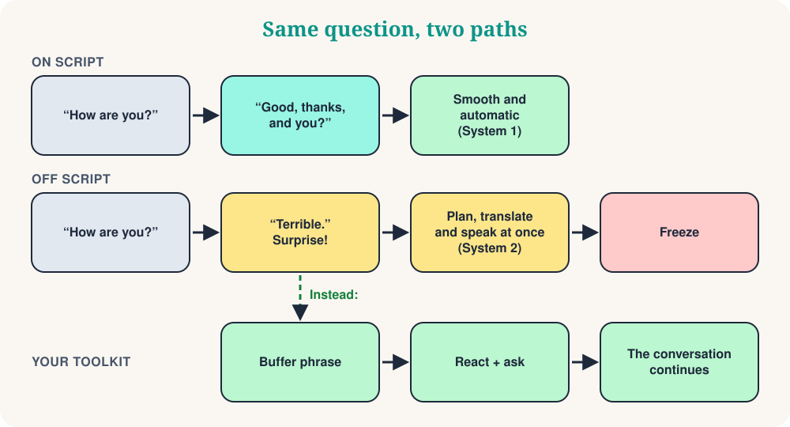

In my speaking club, Mind Matters, we explore the psychology behind language learning. Recently we started with a short video that made us laugh, and then think. It is called “When the patient goes off script.” A staff member says the usual greeting, “How are you?” The patient answers calmly: “Terrible.” And the employee short-circuits: stuttering, wrong words, nervous eyes.
If you learn a language, you know this moment. Someone asks a routine question, you give the routine answer, and then the other person says something you did not prepare. Your mind goes blank. Is this freeze a real phenomenon? Psychology has a useful way to explain it: script theory.
Part 1: What is a script?
In the 1970s, cognitive scientists Roger Schank and Robert Abelson proposed that we store our knowledge of everyday situations as scripts: typical sequences of events, roles and expectations. Their classic example is eating at a restaurant:
- You enter and wait to be seated.
- You read the menu and order.
- You eat.
- You ask for the bill and pay.
- You leave.
Nobody teaches you this list, and nobody forgets it. You do not order dessert before the main course, and you do not wonder who pays. Scripts save mental energy: because the sequence is predictable, you can act almost on autopilot.
Daniel Kahneman's popular distinction helps here (it is a simplification, but a useful one). Scripted behaviour is mostly fast and automatic: System 1. New situations need slow, deliberate System 2. In a foreign language, System 2 is already working hard just to find words. That is why memorised phrases feel like solid ground: “How are you?” “Good, thanks, and you?” costs almost nothing.
Part 2: What happens when the script breaks?

Conversation is a joint activity. The psychologists Martin Pickering and Simon Garrod describe dialogue as interactive alignment: while we talk, we unconsciously align with each other, in the words we choose, the structures we use and the meaning we assume. A script makes this easy, because both people know what comes next.
When your partner says “Terrible,” the prediction fails. Now you must understand an unexpected message, decide how to react, find the words and say them, all at once, in a language that is not yet automatic. Add the pressure of being watched, and your working memory is overloaded. Freezing, stuttering and the “robot short-circuit” are simply what overload looks like from the outside.
Two things are worth remembering. First, the freeze is not proof that you are bad at the language. Native speakers also freeze when a conversation goes somewhere unexpected; they just have more automatic material to fall back on. Second, the problem is often timing. You know many of the words. You do not have the seconds.
Part 3: Off script is where learning happens
I used to have the same fear. As a teacher and as a student, I loved well-prepared dialogues. After years of working with learners of English, French, Italian, Russian, Greek and other languages, I changed my mind. A memorised dialogue is a rehearsal. An unexpected exchange is real communication.
The sociologist Erving Goffman showed that everyday interaction is not just following a text. People constantly manage the situation: they interpret what the other person is doing, adjust, repair small embarrassments and help each other save face. Improvising is a normal human skill, not a sign of failure. When you stumble off script, you practise exactly that skill in a new language.
Your off-script toolkit
Tip 1: Buy time with buffer phrases
When the unexpected question arrives, do not answer immediately. Say a short, automatic phrase first. It gives your brain two or three seconds, and it sounds natural, because native speakers use such phrases all the time.
| Language | Start with… | Then add… |
|---|---|---|
| English | That's a good question… | Let me think for a second… |
| French | C'est une bonne question… | Voyons voir… laissez-moi réfléchir. |
| Italian | Bella domanda… | Allora… vediamo… dammi un attimo. |
| Spanish | Buena pregunta… | A ver… déjame pensar. |
| Russian | Хороший вопрос… | Так… дайте подумать. |
| Greek | Καλή ερώτηση… | Για να δω… να το σκεφτώ λίγο. |
Choose one phrase per language and make it your default. Say it aloud ten times, until it needs no thinking.
Tip 2: Aim for communication, not perfection
Script anxiety often comes from perfectionism: the hidden belief that every sentence must sound like a textbook. When someone goes off script, your inner perfectionist panics because the rehearsed dialogue is ruined. Change the goal. Language is not a performance; it is a connection. Use simpler words, gestures, or circumlocution, which means explaining a word you do not know by describing it. The aim is that you understand each other, not that you win a grammar prize.
Tip 3: Learn flexible scripts, not rigid ones
If you memorise a whole dialogue word for word, you crash when the other person does not follow it. Learn building blocks instead. A very useful block is a three-step ladder: react, ask, offer. It works for almost any surprise.
| Language | 1. React | 2. Ask | 3. Offer |
|---|---|---|---|
| English | Oh no… | What happened? | Do you want to talk about it? |
| French | Oh non… | Qu'est-ce qui s'est passé ? | Vous voulez en parler ? |
| Italian | Oh no… | Che cosa è successo? | Vuoi parlarne? |
| Spanish | Vaya… | ¿Qué ha pasado? | ¿Quieres hablar de ello? |
| Russian | Ой, нет… | Что случилось? | Хотите поговорить об этом? |
| Greek | Ωχ, όχι… | Τι συνέβη; | Θέλετε να το συζητήσουμε; |
The same idea works for everyday tasks. Instead of learning one dialogue for buying coffee, learn sentences with a gap you can change:
Change the blank: a latte, a tea, a sandwich.
Context: Ordering
Your pivot for any surprise. The conversation becomes a branch, not a wall.
Context: When the answer is “no”
Tip 4: Reframe the “mistake”
When you stumble, your brain reads it as a threat. Try to reframe the spike of adrenaline. Instead of “I messed up, I sounded stupid,” tell yourself the sentence below. The linguist Stephen Krashen called anxiety an “affective filter” that blocks learning. The hypothesis is debated, but most teachers recognise the effect: relaxed learners speak more, and speaking more is how you improve.
Say it silently, then use your buffer phrase.
Context: Inner voice
Quick quiz
❓ The patient says “Terrible.” You freeze. According to script theory, why?
A script predicts what comes next. When the prediction fails, you must switch from automatic to effortful processing, and that overloads you.
❓ What is the best first move after an unexpected question?
A buffer phrase is automatic, so it costs nothing, and it gives your brain the seconds it needs.
❓ Which strategy makes you more flexible in conversations?
Blocks can be recombined. A fixed dialogue only works when the other person follows it.
Your 10-minute off-script training
- Choose your buffer phrase from the table and say it aloud ten times.
- Ask a friend (or a voice recorder) five routine questions: “How are you?”, “What did you do today?”…
- Your friend answers each one with an unexpected reply: “Terrible,” “I lost my keys,” “I'm moving to Norway.”
- You answer with the toolkit: buffer phrase, react, ask.
- Swap roles. Then record round two and listen to the difference.
Conclusion
Next time you freeze, do not call it a failure. It is an invitation to step out of the automatic template and meet the real person in front of you. Say your buffer phrase, react, ask, and keep the conversation alive.
“The moment the script ends is the moment the conversation begins.”
Sources and further reading
- Schank, R. & Abelson, R. (1977). Scripts, Plans, Goals and Understanding.
- Pickering, M. & Garrod, S. (2004). Toward a mechanistic psychology of dialogue. Behavioral and Brain Sciences, 27.
- Goffman, E. (1959). The Presentation of Self in Everyday Life.
- Kahneman, D. (2011). Thinking, Fast and Slow.
- Krashen, S. (1982). Principles and Practice in Second Language Acquisition.